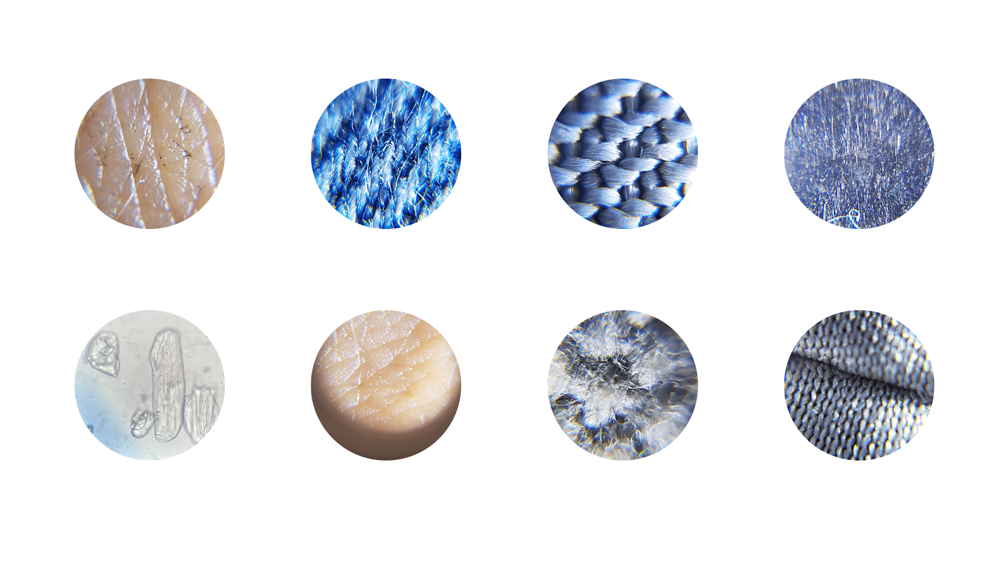
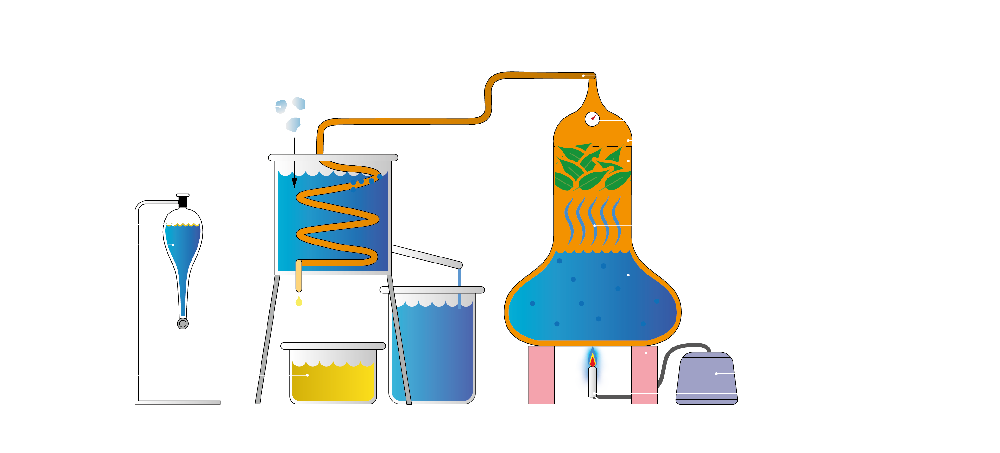

Focussing on Biology, Microbiology, Microscopy, Genetics, Genetic Modification and Synthetic Biology.

This scheme illustrates the role we humans have in intervering in biology and creating futures. The capabilities we have in this seem simulataneously both very exciting and very frightening.
How much longer until we know everything about us? How many years untill we design our offspring and cancer is history?
What happens when we create something we can't control? Is there anyone responsible in all of this?
There are 7,7 billion people on this planet. It is expected that another 7,7 billion will be here in less than 30 years. Needless to say, there are huge problems on this earth.. Just to name a few:
• Element exhaustion (lithium, phospherous)
• Climate change (internet CO2, climate refugees) • Contamination (hormones; anti-conception, drugs, microplastics, chemotherapy) • Food scarse (decay of avocados, bananas and nuts)
Providing food on global scape asks for experimenting with new solutions. Spirulina is a cyanobacteria that recently got popular as a supplement for being a so-called superfood. Its nutrional values are more beneficial than any kind of meat or soja-based food and requires significantly less water and less energy to produce.
Experimenting with textiles and organic materials on microscopic levels:


Experiment:
Microscoping growing lactobacillus bacteria on cheese applied in a pressure-varied spiral-shape on a petri-dish. Hypothesis:
More growth of lactobacillus in the section where more pressure is applied. Method:
Preparing a growing-medium for bacteria in a petri-dish. Sampling a surface or material, apply to the petri-dish and incubate for >24 hours. Visual checking bacteria growth and in case of presency microscoping and documenting the outcomes. Results:
In a sample of commercial cheese lactobacillus started growing after ±48 hours. Observing the bacteria trough the microscope learns that there are minimal differences in lactobacillus growth between low- or highpressure sections of the same sample.
Distillation of laurel:
Turning laurel leaves into essential oil.🧪
Requirements:
• A distillation kettle with thermometer • 2 large buckets
• Plenty of ice cubes • 1 seperatory funnel with standard
• 1 bunsen burner with gas • 6 bricks
Method:
1. Fill the kettle with ±10 liters of water and close it after putting the fresh laurel leaves in the top compartment. 2. Heat the kettle by placing the lit bunsen burner under it.
3. Wait till the water starts to evaporate and the temperature increases above 60°C. 4. Start putting ice cubes in the bucket to condensate the oil/water combination in the copper tube.
5. Pour the emulsion in the seperatory funnel and wait. 6. Tap off the water and store the essential oil in a seperate container.
Scientific paper
An explanation and conceptual proposal within the subdivision T-B+NK+ of a group of genetic disorders called SCID (Severe Combined Immunodeficiency).
Microscoping growing lactobacillus bacteria on cheese applied in a pressure-varied spiral-shape on a petri-dish. Hypothesis:
More growth of lactobacillus in the section where more pressure is applied. Method:
Preparing a growing-medium for bacteria in a petri-dish. Sampling a surface or material, apply to the petri-dish and incubate for >24 hours. Visual checking bacteria growth and in case of presency microscoping and documenting the outcomes. Results:
In a sample of commercial cheese lactobacillus started growing after ±48 hours. Observing the bacteria trough the microscope learns that there are minimal differences in lactobacillus growth between low- or highpressure sections of the same sample.
Distillation of laurel:
Turning laurel leaves into essential oil.🧪
Requirements:
• A distillation kettle with thermometer • 2 large buckets
• Plenty of ice cubes • 1 seperatory funnel with standard
• 1 bunsen burner with gas • 6 bricks
Method:
1. Fill the kettle with ±10 liters of water and close it after putting the fresh laurel leaves in the top compartment. 2. Heat the kettle by placing the lit bunsen burner under it.
3. Wait till the water starts to evaporate and the temperature increases above 60°C. 4. Start putting ice cubes in the bucket to condensate the oil/water combination in the copper tube.
5. Pour the emulsion in the seperatory funnel and wait. 6. Tap off the water and store the essential oil in a seperate container.

Scientific paper
An explanation and conceptual proposal within the subdivision T-B+NK+ of a group of genetic disorders called SCID (Severe Combined Immunodeficiency).
By Ruben de Haan on October 30th, 2021